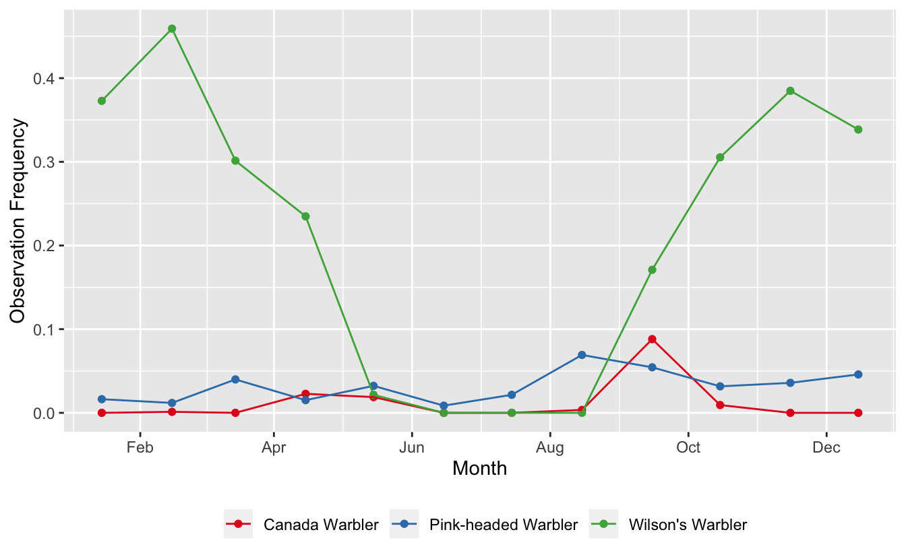
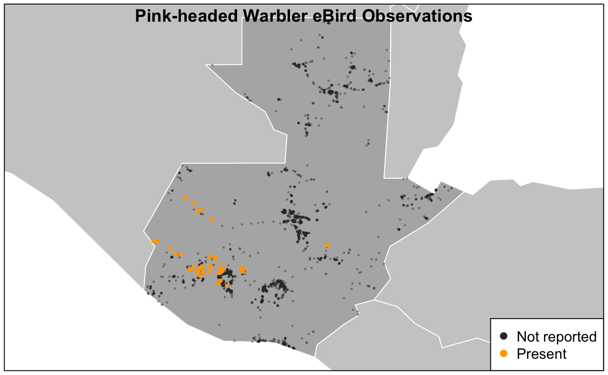
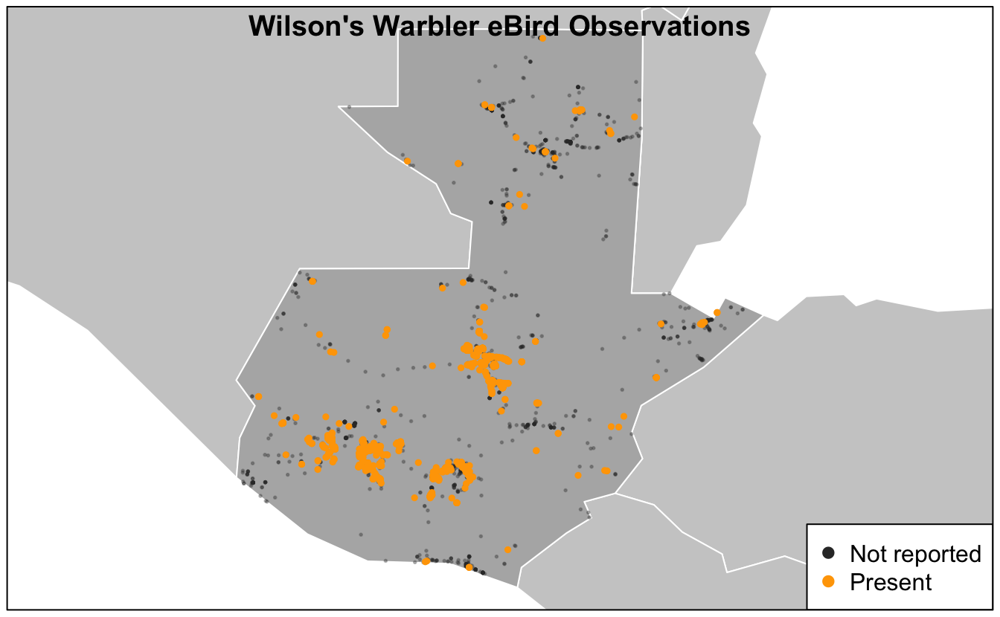

Lesson 8 Applications
Now that we know how to extract and zero-fill data from eBird, let’s do something with these data! We’ll start by summarizing the data to show the trajectory of observation frequency over the course of the year. Next, we’ll make a basic presence-absence map of eBird observations. More advanced topics are covered in part II of this workshop, which focuses on using eBird data to model species distributions. We’ll start a new script for this lesson: 02_applications.R.
8.1 Frequency trajectories
The genus Cardellina contains five New World warbler species, including some of the most spectacular birds in North America: Canada Warbler, Red Warbler, and Pink-headed Warbler. Let’s extract and zero-fill data for three of the species in this genus within Guatemala.
library(auk)
library(sf)
library(rnaturalearth)
library(lubridate)
library(tidyverse)
f_ebd <- "data/ebd_cardellina.txt"
f_sed <- "data/sed_cardellina.txt"
# extract
filters <- auk_ebd("ebd_2014-2015_yucatan.txt",
file_sampling = "ebd_sampling_2014-2015_yucatan.txt") %>%
auk_species(c("Canada Warbler", "Wilson's Warbler",
"Pink-headed Warbler")) %>%
auk_country("Guatemala") %>%
auk_complete() %>%
auk_filter(f_ebd, f_sed)
# zero-fill
cardellina_zf <- auk_zerofill(f_ebd, f_sed, collapse = TRUE)
count(cardellina_zf, scientific_name, species_observed)
#> # A tibble: 6 x 3
#> scientific_name species_observed n
#> <chr> <lgl> <int>
#> 1 Cardellina canadensis FALSE 6454
#> 2 Cardellina canadensis TRUE 54
#> 3 Cardellina pusilla FALSE 4795
#> 4 Cardellina pusilla TRUE 1713
#> 5 Cardellina versicolor FALSE 6322
#> 6 Cardellina versicolor TRUE 186Next, let’s summarize these data, calculating the frequency of observation on eBird checklists by month.
cardellina_freq <- cardellina_zf %>%
mutate(month = month(observation_date)) %>%
group_by(scientific_name, month) %>%
summarize(obs_freq = mean(species_observed)) %>%
ungroup()In preparation for plotting, we can add the common names of the species by joining in the ebird_taxonomy data frame, which is included with auk. In addition, we’ll convert the integer month numbers to dates–using the midpoint of each month–to aid axis labeling.
cardellina_comm <- cardellina_freq %>%
inner_join(ebird_taxonomy, by = "scientific_name") %>%
select(common_name, month, obs_freq) %>%
mutate(month_midpoint = ymd(str_glue("2019-{month}-15")))Finally, let’s make a frequency trajectory for these four species.
ggplot(cardellina_comm) +
aes(x = month_midpoint, y = obs_freq, color = common_name) +
geom_point() +
geom_line() +
scale_x_date(date_breaks = "2 months",
date_labels = "%b") +
scale_color_brewer(palette = "Set1") +
labs(x = "Month", y = "Observation Frequency",
color = NULL) +
theme(legend.position = "bottom")
We have several different patterns going on here:
- Pink-headed Warblers is a resident species, present year-round at fairly low abundance
- Wilson’s Warbler spends the winter in Guatemala and is common during that period
- Canada Warbler appears to only pass through Guatemala during migration
8.2 Maps
Continuing with the same dataset, let’s make a presence-absence map for Pink-headed Warbler. We’ll start by filtering the zero-filled data to only Pink-headed Warbler observations and converting these points to a spatial format using the sf package.
pihwar <- cardellina_zf %>%
filter(scientific_name == "Cardellina versicolor") %>%
st_as_sf(coords = c("longitude", "latitude"), crs = 4326)Next, we’ll use rnaturalearth to get some contextual GIS data to use in our maps. This is an amazing source for free GIS data for making maps.
ne_country <- ne_countries(continent = "North America", returnclass = "sf") %>%
st_geometry()
ne_gt <- ne_countries(country = "Guatemala", returnclass = "sf") %>%
st_geometry()
# restrict to points falling within Guatemala, removes those over water
pihwar <- pihwar[ne_gt, ]Finally, we’ll make a presence-absence map, building it up in layers. There are lots excellent tools for mapping in R; however, here we’ll use the basic plot() function from the sf package. Other good options include ggplot2 and tmap.
par(mar = c(0.25, 0.25, 0.25, 0.25))
# start by defining the bounds of the map with an empty plot
plot(ne_gt, col = NA, border = NA)
# borders
plot(ne_country, col = "grey80", border = "white", add = TRUE)
plot(ne_gt, col = "grey70", border = "white", add = TRUE)
# not observed
pihwar_abs <- filter(pihwar, !species_observed) %>%
st_geometry()
plot(pihwar_abs, col = alpha("grey20", 0.3), pch = 19, cex = 0.25, add = TRUE)
# present
pihwar_pres <- filter(pihwar, species_observed) %>%
st_geometry()
plot(pihwar_pres, col = alpha("orange", 1), pch = 19, cex = 0.5, add = TRUE)
title("Pink-headed Warbler eBird Observations", line = -1)
legend("bottomright",
col = c("grey20", "orange"),
legend = c("Not reported", "Present"),
pch = 19)
box()
Based on this map, we see that Pink-headed Warbler is restricted to the southwestern highlands of Guatemala.
Exercise
Make a similar map of Wilson’s Warbler (Cardellina pusilla) observations.
# prepare data
wilwar <- cardellina_zf %>%
filter(scientific_name == "Cardellina pusilla") %>%
mutate(pres_abs = if_else(species_observed, "Present", "Not detected")) %>%
st_as_sf(coords = c("longitude", "latitude"), crs = 4326)
wilwar <- wilwar[ne_gt, ]
# make map
par(mar = c(0.25, 0.25, 0.25, 0.25))
plot(ne_gt, col = NA, border = NA)
plot(ne_country, col = "grey80", border = "white", add = TRUE)
plot(ne_gt, col = "grey70", border = "white", add = TRUE)
# not observed
wilwar_abs <- filter(wilwar, !species_observed) %>%
st_geometry()
plot(wilwar_abs, col = alpha("grey20", 0.3), pch = 19, cex = 0.25, add = TRUE)
# present
wilwar_pres <- filter(wilwar, species_observed) %>%
st_geometry()
plot(wilwar_pres, col = alpha("orange", 1), pch = 19, cex = 0.5, add = TRUE)
title("Wilson's Warbler eBird Observations", line = -1)
legend("bottomright",
col = c("grey20", "orange"),
legend = c("Not reported", "Present"),
pch = 19)
box()